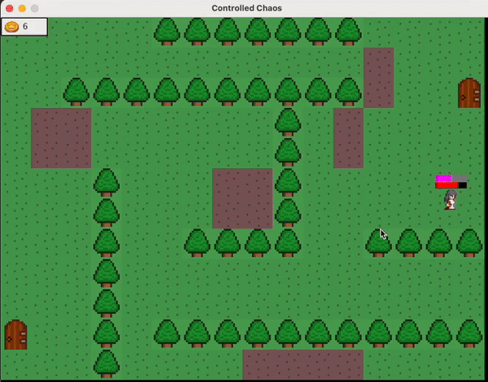
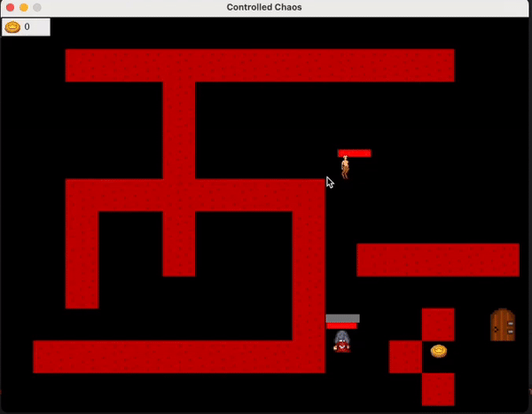
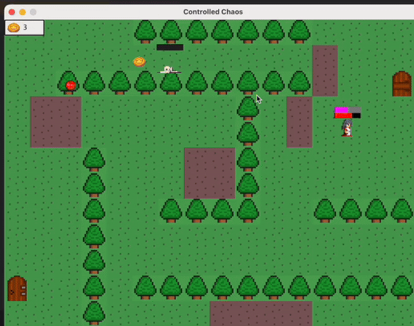
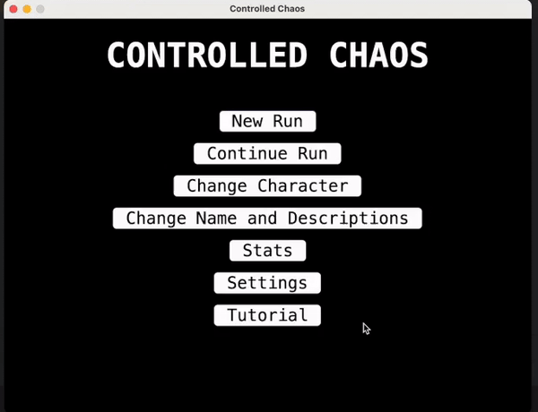
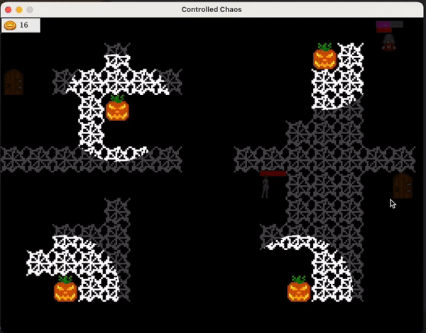

Controlled Chaos
Project Description:
Overview: Controlled Chaos is a roguelike game that combines curated experiences with randomly generated content, featuring randomly generated levels, enemy encounters, and item discoveries. The game aims to distinguish itself by incorporating themes of randomness in both level design and artwork, along with dynamic item functions that players discover and document in-game. The objective is to create an engaging experience for players who enjoy problem-solving and replayability.
Team Members:
- Bolun Zhang
- Karina Abraham
- Cameron Hofbauer
- Javad Baghirov
- Zayden Newquist
- Jack Wagne
GitHub Repository: https://github.com/Javad228/Controlled-Chaos-GameDev
Tools and Technologies:
- Programming Language: Java
- Framework: LWJGL (Lightweight Java Game Library) for building the game engine.
- APIs and Libraries:
- OpenGL for rendering visuals and animations.
- GLFW for managing windows and handling user inputs.
- OpenAL for sound effects and background music.
- GSON for saving game states using JSON.
My Role in the Project:
I have been responsible for several key components and user stories throughout the development of Controlled Chaos:
- In Sprint 1, I worked on creating the methods for pausing/resuming the game and implementing the quit functionality.
- In Sprint 2, I developed the room generation method, ensuring the creation of different enemy and boss encounters for each playthrough.
- In Sprint 3, I took charge of implementing the tutorial system, designing the mini-map feature, and enabling players to write and save notes on the map.
Game GIFs and Descriptions:
Attack

Demonstrates the attack mechanics of the game where the character fights enemies.
Maps
Shows the map navigation and room generation features of the game.
NPC Interaction
Interaction with NPCs within the game, showcasing dialogue and quest mechanics.
Save
Demonstrates the game save and load feature, using JSON to maintain states.
Tutorial
Displays the tutorial system, guiding players through the basic mechanics.
Inventory
Shows the inventory management system, allowing players to manage items.
Code Descriptions:
1. checkLootCollision(Character entity, Loot target)
public boolean checkLootCollision(Character entity, Loot target) {
if (target == null) return false;
entity.collisionOn = false;
entity.solidArea.x = entity.xCoord + entity.solidArea.x;
entity.solidArea.y = entity.yCoord + entity.solidArea.y;
target.solidArea.x = target.getxCoord() + target.solidArea.x;
target.solidArea.y = target.getyCoord() + target.solidArea.y;
if (entity.solidArea.intersects(target.solidArea)) {
entity.collisionOn = true;
}
// Resetting to original coordinates after checking collision.
entity.solidArea.y = entity.collisionAreaDefaultY;
entity.solidArea.x = entity.collisionAreaDefaultX;
target.solidArea.x = target.collisionAreaDefaultX;
target.solidArea.y = target.collisionAreaDefaultY;
return entity.collisionOn;
}Explanation: This function checks whether the solid area of the character intersects with that of the loot. If they intersect, it sets collisionOn to true, indicating a collision. It then resets the solid area coordinates to their default values to prepare for the next frame.
2. nextLevel()
public void nextLevel() {
this.invalidate();
Audio.stopMusic();
getPlayer().incrementLevel();
this.rooms = Room.generateNewLevel(getPlayer().getGameDifficulty(), keyH, this);
setCurrentRoomNum(0);
setLevelComplete(false);
getPlayer().setxCoord(CoordinateWizard.getX(getCurrentRoomNum()));
getPlayer().setyCoord(CoordinateWizard.getY(getCurrentRoomNum()));
initializeLevelClocks();
this.validate();
Audio.openingMusic();
}Explanation: This function stops the current level music, updates the player’s level, generates new rooms for the next level, and resets the player’s coordinates. It also reinitializes level clocks and restarts the music.
3. run()
public void run() {
double drawInterval = 1000000000.0 / fps;
double delta = 0;
long lastTime = System.nanoTime();
while(gameThread != null){
long currentTime = System.nanoTime();
delta += (currentTime - lastTime) / drawInterval;
lastTime = currentTime;
if (delta >= 1) {
update();
repaint();
delta--;
}
}
}Explanation: This function is the main game loop, where update() is called to progress game logic and repaint() is used to render the frame. It maintains a consistent frame rate by adjusting delta to control frame timing, ensuring smooth gameplay.